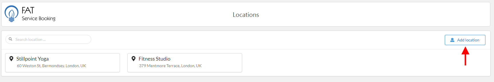
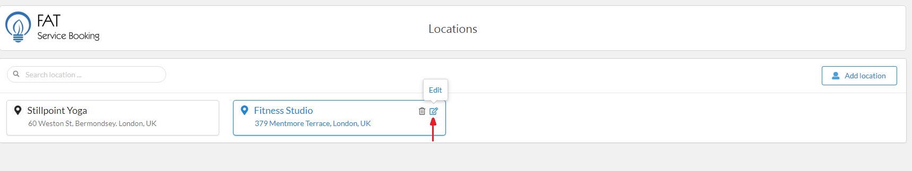

FAT Services Booking Documentation
visit roninwp.comLocation
Location is the place where your employees are providing company’s services (medical, gym center, salon). You can have one or several locations, depending on the type of the services you offer. To create service extra, please do follow:
- Log into your WordPress admin panel.
- Navigate to FAT Services Booking » Location.
- Click 'Add Location' in right screen.
- Fill location info.
- Click 'Save' button to save location.


- Name: This is name of location and it is required
- Address: This is address of location and it is required.
- Map: This is optional, you can search location on map and select via fill address to 'Enter query field'
- Notes: You can add a description for this location at here. It is optional
Edit or delete location
After create location, if you want edit or delete location, please hover mouse on location item. The 'edit' or 'delete' icon will be appearance in top right corner of item. Please click 'edit' icon if you want edit, or 'delete' icon if want delete
